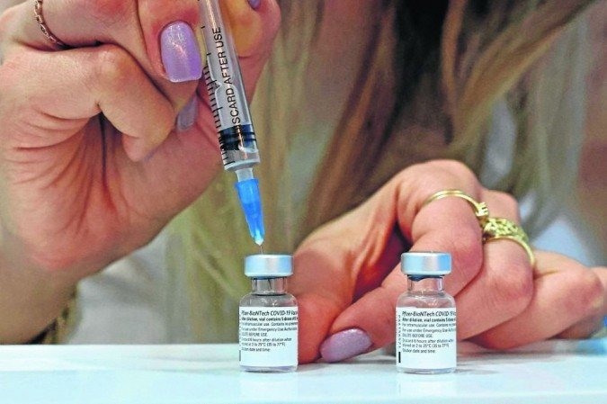

Vacinação: Dentistas entram no grupo prioritário depois dos idosos
Deputado distrital ingressou com um pedido ao governo local para que categoria fosse imunizada entre os trabalhadores da saúde imediatamente
De rodovia a economia, ministro da Infraestrutura escorrega em balanço de obras
Tarcísio Gomes de Freitas mostrou imprecisão nas quatro verificações feitas pelo Holofote a partir de transmissão feita pela TV Brasil